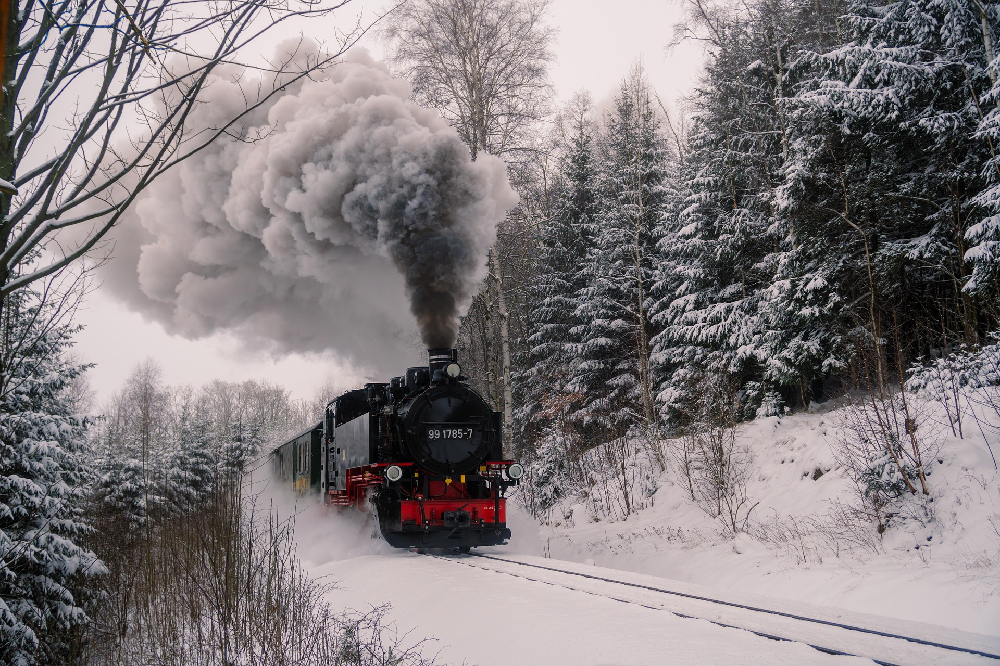
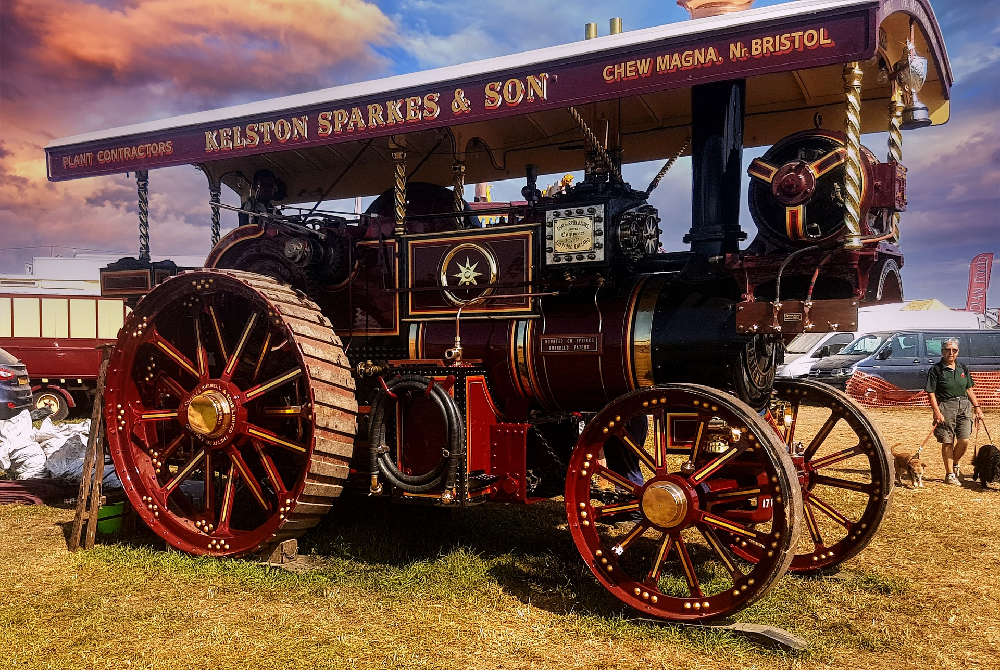
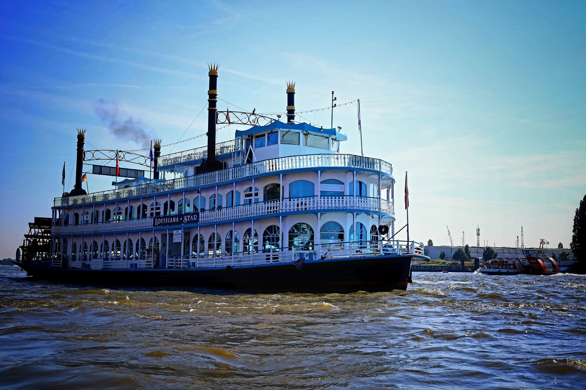

Steam Engines

A steam engine is a heat engine that converts thermal energy from pressurized steam into mechanical work.
Steam engines were used to power many kinds of transportation and machinery. They pulled trains across long distances, powered ships at sea, and ran machines in factories. By using steam pressure to create movement, steam engines helped transport people and goods faster and made manufacturing more efficient during the Industrial Revolution.

A traction engine was a steam-powered vehicle that could move itself and pull heavy loads. It was mainly used on farms and in industry before tractors became common. Traction engines pulled ploughs, wagons, and other machinery, and they could also power equipment such as threshing machines using a large drive belt. Their large flywheel helped store energy and provided smooth, steady power to machinery, making it easier to operate equipment efficiently.

Steam boats were boats powered by steam engines instead of sails or rowing. The steam engine turned large paddle wheels or propellers, allowing the boat to move through the water. Steam boats were used to transport people, goods, and raw materials along rivers, lakes, and oceans. They made travel faster and more reliable because they did not depend on the wind.